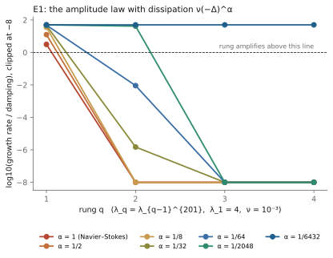
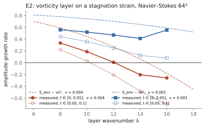

A PROPOSED ROUTE TO THE UNFORCED REGULARITY PROBLEM
Where I think the proof lives, what I managed to close around it, and the one piece I could not.
I'm Anthony Reffelt. Over July 2026 I ran a research program on the 3D Navier–Stokes regularity problem with two AI systems set against each other: one proposed, the other attacked, and I directed. Every numerical claim was registered before the run. Every retraction stayed in the log. What's on this page is the state of that work. It is not a proof of the Millennium problem, and the header of every document in the underlying ledger says the same thing.
I'm posting it now because the problem is suddenly in the news. Tristan Buckmaster and Levent Alpöge have put out Lean-verified finite-time blowup with smooth forcing for 3D Euler, and OpenAI has announced an internal proof of forced Navier–Stokes blowup along Fefferman's options C and D. If that proof holds up under review, the prize is settled through the forced breakdown statements. The unforced question, options A and B, stays open on its own terms, and that's the question this page is about. I'd rather have my route on the table, gap and all, than sit on it.
If you can break anything here, my address is at the bottom and I'll post the outcome either way.
Fefferman's official statement has four options. A and B: show that every smooth, divergence-free, finite-energy starting velocity on \(\mathbb{R}^3\) or \(\mathbb{T}^3\), with no external force, gives a smooth solution for all time. C and D: find one smooth starting velocity and one smooth, bounded-energy force \(f(x,t)\) for which the solution breaks down in finite time. The force in C and D is part of the official wording. This program went after A and B, and its blowup search stayed in the unforced case.
The test everyone uses is Beale–Kato–Majda. A solution stays smooth exactly as long as the vorticity \(\omega=\nabla\times u\) stays integrable in time:
So the whole question is whether vorticity can become infinite in finite time. Vorticity grows by stretching, \(\dot{\omega} = S\omega + \nu\Delta\omega\), where \(S\) is the strain. Stretching only works while the vorticity vector points along a stretching direction of \(S\). How well it stays pointed there is the object everything below is built around.
These are component results with complete proofs. Each was attacked by the second system under a written protocol before it got marked closed. None of them is a regularity statement by itself. Their job is to fence the problem in.
Take vorticity \(\omega\in L^1(\mathbb{R}^3)\) supported in a ball \(B(x_0,\delta)\) with total mass \(\Gamma=\|\omega\|_{L^1}\), and let \(u\) be its Biot–Savart velocity. Then at any point \(x\) with \(d=|x-x_0|\ge 2\delta\),
Three lines: the kernel derivative is bounded by \(3/(4\pi|z|^3)\), the geometry gives \(|x-y|\ge d/2\), integrate. No regularity beyond \(L^1\) and no smallness. The sharp constant is \(4/\pi\). This settles the far half of a near/far split. The near zone is the whole problem, and this lemma says nothing about it.
Let \(G(u)(x)=g(u(x),\nabla u(x))\) be any scale-normalized pointwise observable: an alignment angle, normalized \(Q\)–\(R\) coordinates, stretching efficiency, pressure–strain correlation. For any value \(v\) that's kinematically possible and any \(\varepsilon>0\), there's a smooth, compactly supported, divergence-free field of unit energy with \(G=v\) on a ball, and another with \(G\) within \(\varepsilon\) of \(v\) in enstrophy-weighted average. The construction: write down a linear field \(A+Mx\) with \(\operatorname{tr}M=0\), cut it off, and repair the divergence in the annulus with the Bogovskiĭ operator. The core never gets touched.
What this kills. Every argument of the shape "finite energy means the vorticity can't align like X" is empty. A whole family of candidate inequalities went away at once.
For any static inequality of the admissible type there's a divergence-free field that saturates it while sitting arbitrarily close to a field that violates its intended conclusion. Whatever closes the problem has to use the time evolution, not a snapshot.
Suppose stretching is weakened by some fixed factor \(\rho^*<1\) everywhere. Ladyzhenskaya plus Young still leaves the enstrophy inequality with its cubic term \(Z^3\). The exponent doesn't care about the prefactor. So whatever closes the problem has to scale with the solution instead of multiplying it, which is why the gap below is written in scale-covariant form.
With strain eigenvalues \(\lambda_1\ge\lambda_2\ge\lambda_3\), write \(\alpha=\xi\cdot S\xi\) for the stretching rate along the vorticity direction \(\xi=\omega/|\omega|\) and \(\tau=|P_\perp S\xi|\) for the rate at which that direction turns. Then
Full stretching means no turning, full turning means no stretching. It's just algebra, but every dynamical form of the gap gets written against it.
Since \((-\Delta)^{-1}=\int_0^\infty e^{s\Delta}\,ds\), exactly
Split the integral at the coherence heat-time \(s^*=(\theta/K)^2\). The tail reproduces Lemma 1 from Gaussian bounds. The head puts the Calderón–Zygmund wall into heat coordinates, where the near-field question turns into a gain of order \(K\sqrt{s}\) on the shear sector.
A regular vortex core is locally solid-body rotation, so it's cyclostrophic: \(p'/\rho\) on the axis equals \(\omega_0^2/4\). The direct term of the axisymmetric pressure Hessian on the axis is then
That's exactly the coefficient that cancels the frame-chase term in the strain evolution on a coherent tube. On tilted tubes in triaxial strain, across a fourfold amplitude range, the fitted coefficient came out between 0.243 and 0.246. The first-order correction \([p''-p'/\rho]/(2|\omega|^2)\) vanishes on the axis and goes negative off it, which predicts a number slightly under 1/4. So on coherent cores the pressure holds its own structure in place, \(\dot S_{12}\approx 0\), and the alignment there is the eigenframe being dragged along rather than chased. What's still assumed: a slender tube and a near-steady core. Those are named, not buried.
Intense vorticity in a real flow doesn't come as clean tubes. It comes as tangles of flux-carrying strands, spaghetti. Two results on that picture, both marked conditional in the ledger.
Carve a braid \(B\) into \(N\) roughly tube-like strands with circulations \(\Gamma_k\) adding up to \(\Gamma\), under an exterior strain \(s\). If each strand is Burgers-slaved at that strain, its peak vorticity is capped at \(\Gamma_k s/(4\pi\nu)\), and so
Splitting circulation across strands only lowers the cap: with equal shares the ratio to a single tube is \(1/N\), checked at \(N=1,2,3,5,10,20\). To grow past the cap a braid has to accrete or run into another braid, and a same-sign merger defeats itself, since it raises the total circulation and lowers the strand count, which is one tube with one cap again. What's open is the constant for badly tangled braids whose strands are nowhere near tube-like. That's a place a reader could push.
Two anti-parallel filaments under Crow's instability tilt, approach at the troughs, and the classical clock predicts a finite-time collision: \(b^2(t)=b_0^2-(c\Gamma/\pi)\,t\), so \(t_c=\pi b_0^2/(c\Gamma)\). With viscous cores slaved to the pinch strain the logarithm stays exactly constant during the collapse, \(\Lambda=\ln(b/a)=\tfrac12\ln(Re_\Gamma/8\pi)\), so the filament model is self-consistent all the way down and predicts an infinite velocity.
It's singular by construction. The model freezes topology (no reconnection), keeps the cores rigid (no core dynamics), and its \(\sqrt{t_c-t}\) collapse is exactly the Leray self-similar class that Nečas, Růžička and Šverák excluded. At the contact scale the real equations have to either reconnect or stop being self-similar, and that fork is the gap below. Everything up to contact genuinely happens, which is why the pinch stays the persistent candidate, and why aircraft trails link up behind the plane.
Everything above points at one object. Write \(K_{CF}\) for the Constantin–Fefferman coherence of the vorticity direction on the high-vorticity set where stretching is active, \(\theta\) for the local misalignment, \(M\) for the strain amplitude, and \(c_1,c_2,c_\nu\) for the constants in the Riccati pair \(\dot M\le(c_1\theta-c_\nu)M^2\), \(\dot K\le c_2\theta M K\). Any one of the following, proved for all smooth finite-energy data, gives option A.
| Form | Statement | Where it comes from |
|---|---|---|
| D1 — coherence | \(\sup_t K_{CF}(t)\le K^*(E_0,\nu)\) on the stretching-active set. | Constantin–Fefferman, in dynamical form. |
| D2 — heat | A rigorous \(K\sqrt{s}\) gain for \(\int_0^{s^*}\nabla^2 e^{s\Delta}[\text{Biot–Savart of }S]\,ds\) on the aligned shear sector, with a \(\Gamma\)-normalized tail. | Lemma 6, split at \(s^*\). |
| D3 — pitch | Orbit-averaged \(c_1\theta-c_\nu\le-\delta<0\), uniformly in \(\nu\). | The Riccati pair; the measured pitch of the amplitude–coherence helix. |
| D4 — Mohr | \(\|\nabla(P_\perp S\xi)\|\) subcritical on the shear sector: the gradient layer of the turning rate. | Lemma 5, one derivative up. |
The lemmas say what a proof of any of these has to look like: dynamical (3), scale-covariant (4), near-field only (1 handles the rest), on the shear sector (5), and at the gradient level. Every route I tried, helix, transform, heat, Mohr, ended on this same object. So the proposal is short: stop hunting for a new inequality and prove one of D1 to D4.
Added 2026-09-08, after reading the Alpöge–Buckmaster preprints. Their engine is an exact affine-background wave. On a background with strain \(D(t)\) and gradient \(G(t)\), a wave with phase \(s=\lambda\,\zeta(t)\cdot x\) and amplitudes \(\Theta,\Omega\) solves the equations exactly when
The growth rate of each new layer is set by the gradient the earlier layers left behind, and a controlled rotation of the whole background steers each layer's vorticity back to zero before the next one grows. That rotation is one of the four places the force enters, and it's the one that carries the physics: a rigid rotation with a time-varying rate is not a solution of the unforced equations. In my language, the force is doing the job the pressure Hessian does on a coherent core, in the opposite direction. The brake in Lemma 7 keeps the current layer coherent; their steering hands the flow to the next one.
So the unforced question turns into a number. Define a scale-covariant force budget \(J(f)\) for a blowup pair \((u_0,f)\). If every blowup pair has \(J(f)\ge\delta>0\), option A follows in one line, because the zero force has \(J=0\). Their construction bounds \(\delta\) from above. My D3 form is the same statement on cores. That's the forcing gap, and it's what I'm now working on instead of the four forms alone.
Add dissipation \(\nu(-\Delta)^{\alpha}\) to the wave. When both fields are damped, as they are for Navier–Stokes, the growing eigenvalue is \(\sqrt{A}\sin s-\nu\lambda^{2\alpha}\), so a layer at frequency \(\lambda_q\) grows only if
In their published schedule the frequencies climb super-exponentially, \(\lambda_q=\lambda_{q-1}^{Q}\) with \(Q\ge 201\), while the growth rate available at rung \(q\) scales like \(\lambda_{q-1}^{1/16}\). The damping acts on the new frequency, so the ladder as written locks only for \(\alpha<1/(32Q)\), about \(1.6\times10^{-4}\), and full Navier–Stokes misses the second rung by 240 orders of magnitude at \(\nu=10^{-3}\). That's consistent with the only viscous case they mention, hypodissipation with a sufficiently small exponent, and with Tao calling the Navier–Stokes extension an enormous technical difficulty. It's a statement about this schedule, not about every possible ladder. A ladder that reaches \(\alpha=1\) needs the background strain to grow like the square of the new frequency at every rung, which is the Burgers balance \(s=\nu\lambda^{2}\), the same balance the braid ceiling above is written against. Unforced Navier–Stokes sits exactly at the margin of the rung condition on every coherent core.
Two probes, registered before the runs. The ODE probe applies their amplitude law with dissipation added: at \(\alpha=1/6432\) every rung locks with the same margin, at \(\alpha=1/64\) the ladder dies at rung two, at \(\alpha=1\) it dies at rung two by 240 orders.

The box probe puts a small vorticity layer at wavenumber \(\lambda\) on the stagnation strain of a Taylor–Green flow in the real equations at \(64^3\) and measures its growth rate against \(S-\nu\lambda^{2}\). Sign and ordering held: the growth flips sign near \(\lambda\approx12\) at \(\nu=4\times10^{-3}\) against a predicted 14.5, and stays positive through \(\lambda=16\) at \(\nu=10^{-3}\). The absolute level failed the registered 10% tolerance: measured rates sit 0.2 to 0.25 below the prediction at every \(\lambda\) and \(\nu\), and drop further as the strain compresses the layer. On the real equations the layer never gets the full stagnation strain, so the rung is at least as hard as the ODE says.

The \(96^3\) follow-up with a divergence-free layer and a frozen-background control is in: full and frozen rates agree to two decimals at every wavenumber, so the deficit is intrinsic to a localized layer on a background with vorticity gradients at its width, which is outside the affine class. At \( u=10^{-3}\) the growth changes sign between \(\lambda=20\) and 24 where the affine prediction stays positive through 28. A viscous-decay calibration with no background reproduces \(- u(\lambda^2+ frac32\sigma^{-2})\) within 0.03, so the measurement is honest to that level. The rung condition holds as an upper bound everywhere, with room. Still to come: the force budget \(J\) on their solutions once released.
All runs are pseudo-spectral on a periodic box at \(\nu\ge 0.002\), 48 to 64 points per side, about fifteen seeds, with dealiasing and time-step checks, outcomes registered before each run. They're measurements, not theorems, and they can't reach the inviscid limit.
| Observable | Measured | Reading |
|---|---|---|
| Helix pitch in \((\log A,\log K)\) | \(-0.34\) to \(-0.25\), same sign at every \(\nu\) and resolution | Amplification and coherence trade against each other along the orbit. The spiral sinks; it doesn't wind up. |
| Rotation of the orbit | 8 of 9 active runs rotate; disordered seeds counter-clockwise, organized seeds clockwise | Organized structures cohere first, then grow. |
| Stretching efficiency \(\rho\) | 0.12 to 0.26, against 0.816 allowed by the Mohr disk | Real flows use a fraction of the stretching they're allowed. |
| Turning rate \(\tau\) | 40% of the Mohr budget | Consistent with the frame being dragged on cores. |
| Coherence coefficient | 0.243 to 0.246 against the derived 1/4 | Lemma 7 holds on tubes within 3%. |
| Weak-brake corner fraction across a fourfold Reynolds change | flat, about \(Re^{-0.01}\) | The set where the brake is weak doesn't shrink with Reynolds number. This is the bad news for the route. |
| Kerr-type coherent tail, followed in time | persists at 15.8× baseline overlap, then dissolves by 64% while production rises | A transient wearing away in place, not a singular set being built. |
One result was withdrawn in public after it failed out of sample: an early claim that growth rate contracts the helix. The pre-registration caught it. It stays in the record because the method is the point.
| Statement | Status | Anchor |
|---|---|---|
| 3D Euler finite-time blowup, low regularity, symmetric class, unforced | Proven (computer-assisted) | Chen–Hou; Elgindi |
| 3D Euler finite-time blowup with smooth forcing | Proven, Lean-verified (2026) | Buckmaster–Alpöge, on the Córdoba–Martínez-Zoroa program |
| Type I (self-similar rate) Navier–Stokes singularity | Excluded | Escauriaza–Seregin–Šverák; Nečas–Růžička–Šverák |
| Constant-viscosity self-similar blowup | Prevented by a scaling instability (numerical) | Hou 2024; reproduced here by four routes |
| Forced Navier–Stokes blowup (options C, D) | Announced, unreleased, unreviewed | OpenAI, September 2026 |
| Bounded ancient solutions trivial (Liouville), general case | Open, essentially equivalent to option A | Seregin–Šverák; Koch–Nadirashvili–Seregin–Šverák |
| Smooth all-data unforced 3D Navier–Stokes (options A, B) | Open | this page says where the proof lives |
The Perelman analogy is exact and it's the spine of the route. Type I is already handled by a Perelman-shaped argument: a critical monotone quantity plus exclusion of self-similar profiles. The open case is Type II, the regime that pushed Perelman into surgery. A Gaussian-weighted enstrophy in self-similar variables gives one monotone quantity whose only enemy is the production term, and that production term is the coherence object above.
The ledger behind this page is several hundred dated cards: proofs, attack protocols, registered runs, retractions. I'll share it with anyone who wants to check or attack a specific item, and I'll post the outcome here either way.
Lemmas 1 to 3 have written peer protocols. Break one and it comes off the page.
Prove D1, D2, D3 or D4 for all smooth finite-energy data and you have option A. The lemmas tell you what shape the argument has to take.
The instrument here for a breakdown without forcing is a sign change of the helix pitch as \(\nu\to 0\). It has never been observed. A rotating self-similar profile is the class nobody has looked at.
Contact: amnibro7@gmail.com. Posted 2026-09-08. Program dates July 2026. Method: two adversarial AI systems under my direction, every claim labeled LOCAL, CONDITIONAL or NUM and never Clay until it earned a peer-closed mark.
The momentum framework this program grew out of.
Spectral fingerprints, manifold topology, GPU dynamics.